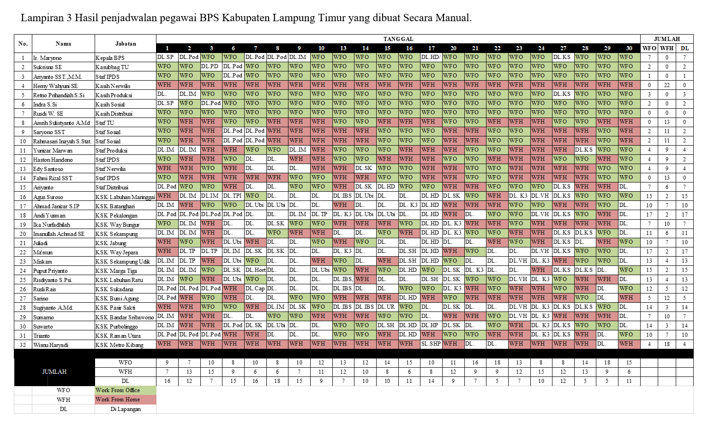

Scheduling Model
Goal Programming Implementation at BPS
During my internship, I noticed that the employee schedule at BPS East Lampung was still arranged manually and did not fully comply with the Covid-19 health protocols.
I took the initiative to apply my mathematics background to develop a more optimal scheduling model. I aimed to create a system supporting both WFO and WFH arrangements according to government regulations (Circular Letter No. 19/2020 & Governor's Decree).
I used the Goal Programming model, a variation of linear programming that handles multiple goals simultaneously by minimizing deviations based on priority levels.
Using LINGO software, I formulated a mathematical model to optimize the schedule. The result satisfies government regulations, meets operational needs, and creates an efficient arrangement during the pandemic.


Optimal Allocation
Right employee, right time.
Workload Balance
Fair distribution of shifts.
Policy Compliance
Strict WFH/WFO rules.
Conflict Reduction
Zero scheduling overlaps.
Flexible Adjust
Easy update on changes.
Efficiency
Boosting work effectiveness.